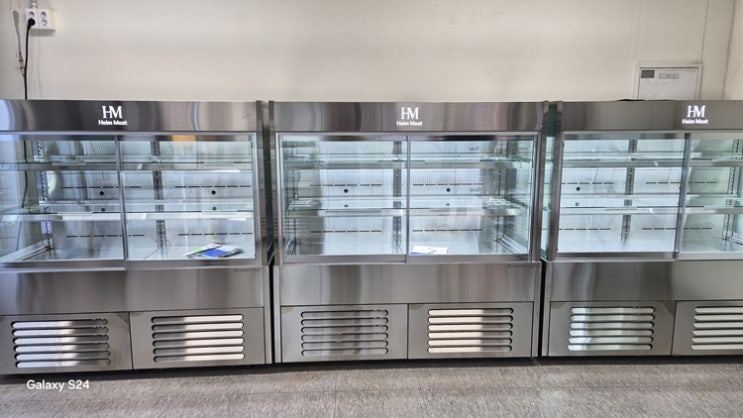

HANSUNG SHOWCASE
매장에 맞춰 만드는
업소용 쇼케이스
꽃냉장고·정육·제과·음료 쇼케이스를 매장 폭과 진열 방식에 맞춰 제작합니다. 실측부터 설치, A/S까지.
- 01전국 240여 개 A/S 전담 센터
설치한 뒤에도 가까운 센터에서 점검과 수리를 받습니다.
- 02쇼케이스 전문 디자이너 상주
매장 인테리어와 동선에 맞춰 도면부터 그립니다.
- 03본사 대량 자재 매입
자재를 본사에서 직접 들여 품질 대비 가격을 맞춥니다.
- 04유럽제·삼성 냉각 콤프
쇼케이스 수명을 정하는 콤프레셔부터 고릅니다.
제품별 제작 사례
쇼케이스 가이드
-
 한성제품냉장쇼케이스 가격, 견적서에서 금액을 가르는 항목 정리냉장쇼케이스 가격은 크기보다 냉각 방식, 문 구조, 유리 사양, 옵션 구성에서 크게 갈립니다. 견적서 읽는 …읽기
한성제품냉장쇼케이스 가격, 견적서에서 금액을 가르는 항목 정리냉장쇼케이스 가격은 크기보다 냉각 방식, 문 구조, 유리 사양, 옵션 구성에서 크게 갈립니다. 견적서 읽는 …읽기 -
 제과쇼케이스제과쇼케이스 전기세, 빵집에서 새는 냉기 잡는 운영 습관제과쇼케이스 전기세는 오븐 열기, 문 여닫는 방식, 매장에 맞지 않는 크기에서 주로 늘어납니다. 베이커리 사…읽기
제과쇼케이스제과쇼케이스 전기세, 빵집에서 새는 냉기 잡는 운영 습관제과쇼케이스 전기세는 오븐 열기, 문 여닫는 방식, 매장에 맞지 않는 크기에서 주로 늘어납니다. 베이커리 사…읽기 -
 와인(음료)쇼케이스업소용음료수냉장고 견적, 요청 전에 정리해 둘 정보 6가지업소용음료수냉장고 견적은 설치 자리 치수, 진열 음료 종류와 수량, 문 방식, 냉각 방식을 함께 보내야 정확…읽기
와인(음료)쇼케이스업소용음료수냉장고 견적, 요청 전에 정리해 둘 정보 6가지업소용음료수냉장고 견적은 설치 자리 치수, 진열 음료 종류와 수량, 문 방식, 냉각 방식을 함께 보내야 정확…읽기 -
 오픈쇼케이스오픈쇼케이스 디자인, 색·마감·조명으로 매장 분위기 맞추기오픈쇼케이스 디자인은 프레임 색과 마감, 조명 색, 선반 구성, 매립 여부가 매장 인테리어와 맞아야 살아납니…읽기
오픈쇼케이스오픈쇼케이스 디자인, 색·마감·조명으로 매장 분위기 맞추기오픈쇼케이스 디자인은 프레임 색과 마감, 조명 색, 선반 구성, 매립 여부가 매장 인테리어와 맞아야 살아납니…읽기 -
 정육쇼케이스정육쇼케이스 관리, 오래 쓰는 매장의 청소·점검 습관정육쇼케이스 관리는 핏물과 기름 청소, 성에 확인, 콘덴서 먼지 제거, 문 패킹 점검을 꾸준히 하는 것이 기…읽기
정육쇼케이스정육쇼케이스 관리, 오래 쓰는 매장의 청소·점검 습관정육쇼케이스 관리는 핏물과 기름 청소, 성에 확인, 콘덴서 먼지 제거, 문 패킹 점검을 꾸준히 하는 것이 기…읽기 -
 과일진열쇼케이스과일쇼케이스 가격, 견적이 달라지는 다섯 가지 지점과일쇼케이스 가격은 크기보다 습도 관리 구조, 진열 단 구성, 문 방식, 조명, 운송·설치 조건에서 갈립니다…읽기
과일진열쇼케이스과일쇼케이스 가격, 견적이 달라지는 다섯 가지 지점과일쇼케이스 가격은 크기보다 습도 관리 구조, 진열 단 구성, 문 방식, 조명, 운송·설치 조건에서 갈립니다…읽기 -
 반찬(진열)쇼케이스반찬가게 창업비용, 반찬쇼케이스에서 줄이면 안 되는 부분반찬가게 창업비용을 줄일 때 반찬쇼케이스는 온도 유지, 김서림 없는 유리, 용기 크기에 맞는 단차만큼은 지켜…읽기
반찬(진열)쇼케이스반찬가게 창업비용, 반찬쇼케이스에서 줄이면 안 되는 부분반찬가게 창업비용을 줄일 때 반찬쇼케이스는 온도 유지, 김서림 없는 유리, 용기 크기에 맞는 단차만큼은 지켜…읽기 -
 꽃냉장고꽃냉장고 가격, 견적서에서 꼭 나눠 볼 항목들꽃냉장고 가격은 높이와 유리 면적, 습도를 지키는 냉각 구조, 문 방식, 물 빠짐 처리에서 달라집니다. 꽃집…읽기
꽃냉장고꽃냉장고 가격, 견적서에서 꼭 나눠 볼 항목들꽃냉장고 가격은 높이와 유리 면적, 습도를 지키는 냉각 구조, 문 방식, 물 빠짐 처리에서 달라집니다. 꽃집…읽기 -
 쇼케이스 이용 및 관리꽃냉장고 음료수냉장고 차이, 바람과 습도에서 갈립니다꽃냉장고와 음료수냉장고는 겉모습은 비슷해도 바람 방향과 내부 습도가 다릅니다. 꽃집에서 음료수 냉장고를 쓰면…읽기
쇼케이스 이용 및 관리꽃냉장고 음료수냉장고 차이, 바람과 습도에서 갈립니다꽃냉장고와 음료수냉장고는 겉모습은 비슷해도 바람 방향과 내부 습도가 다릅니다. 꽃집에서 음료수 냉장고를 쓰면…읽기 -
 한성제품편의점 창업비용, 냉장 집기 예산을 짜는 순서개인 편의점 창업비용에서 냉장 쇼케이스는 매장 크기, 음료·유제품·도시락 구역 구분, 온장고 여부, A/S …읽기
한성제품편의점 창업비용, 냉장 집기 예산을 짜는 순서개인 편의점 창업비용에서 냉장 쇼케이스는 매장 크기, 음료·유제품·도시락 구역 구분, 온장고 여부, A/S …읽기 -
 제과쇼케이스베이커리 오픈 체크리스트, 제과쇼케이스 편베이커리 오픈 전 제과쇼케이스에서 확인할 것은 품목별 구역 구분, 도어 방향, 유리 사양, 냉기 흐름, 마감…읽기
제과쇼케이스베이커리 오픈 체크리스트, 제과쇼케이스 편베이커리 오픈 전 제과쇼케이스에서 확인할 것은 품목별 구역 구분, 도어 방향, 유리 사양, 냉기 흐름, 마감…읽기 -
 와인(음료)쇼케이스업소용음료수냉장고 설치 전, 매장에서 미리 볼 다섯 가지업소용음료수냉장고 설치는 반입 경로, 바닥 수평, 전기 용량, 열 빠질 공간, 배수 위치를 먼저 확인해야 탈…읽기
와인(음료)쇼케이스업소용음료수냉장고 설치 전, 매장에서 미리 볼 다섯 가지업소용음료수냉장고 설치는 반입 경로, 바닥 수평, 전기 용량, 열 빠질 공간, 배수 위치를 먼저 확인해야 탈…읽기 -
 오픈쇼케이스오픈쇼케이스 배치, 벽면·통로·계산대 중 어디가 맞을까오픈쇼케이스 배치는 손님 동선만큼 에어컨 바람, 출입문 외풍, 햇빛 같은 냉기 손실 요인을 함께 봐야 합니다…읽기
오픈쇼케이스오픈쇼케이스 배치, 벽면·통로·계산대 중 어디가 맞을까오픈쇼케이스 배치는 손님 동선만큼 에어컨 바람, 출입문 외풍, 햇빛 같은 냉기 손실 요인을 함께 봐야 합니다…읽기 -
 정육쇼케이스정육쇼케이스 업체 고를 때 상담에서 확인할 것정육쇼케이스 업체는 매장 진단을 하는지, 직접 제작하는지, 고기 진열에 맞는 냉각·조명·유리 사양을 설명할 …읽기
정육쇼케이스정육쇼케이스 업체 고를 때 상담에서 확인할 것정육쇼케이스 업체는 매장 진단을 하는지, 직접 제작하는지, 고기 진열에 맞는 냉각·조명·유리 사양을 설명할 …읽기 -
 과일진열쇼케이스과일가게 창업비용, 과일쇼케이스 예산은 이렇게 나누세요과일가게 창업비용에서 냉장 설비는 상온 진열과 냉장 진열을 나누고, 습도와 공기 흐름을 지키는 과일쇼케이스에…읽기
과일진열쇼케이스과일가게 창업비용, 과일쇼케이스 예산은 이렇게 나누세요과일가게 창업비용에서 냉장 설비는 상온 진열과 냉장 진열을 나누고, 습도와 공기 흐름을 지키는 과일쇼케이스에…읽기 -
 반찬(진열)쇼케이스반찬쇼케이스 맞춤제작, 실측부터 설치까지 진행 순서반찬쇼케이스 맞춤제작은 실측과 반찬 용기 확인, 디자인 상담, 도면 확정, 제작, 설치 순서로 진행됩니다. …읽기
반찬(진열)쇼케이스반찬쇼케이스 맞춤제작, 실측부터 설치까지 진행 순서반찬쇼케이스 맞춤제작은 실측과 반찬 용기 확인, 디자인 상담, 도면 확정, 제작, 설치 순서로 진행됩니다. …읽기 -
 꽃냉장고꽃냉장고 맞춤제작, 매장 벽에 맞춰 설계하는 순서꽃냉장고 맞춤제작은 매장 폭과 버킷 수, 꽃 종류별 온도대, 문 방식, 청소·배수 접근성을 먼저 정해야 합니…읽기
꽃냉장고꽃냉장고 맞춤제작, 매장 벽에 맞춰 설계하는 순서꽃냉장고 맞춤제작은 매장 폭과 버킷 수, 꽃 종류별 온도대, 문 방식, 청소·배수 접근성을 먼저 정해야 합니…읽기 -
 쇼케이스 이용 및 관리오픈쇼케이스 도어형쇼케이스 차이, 판매 방식으로 고르세요오픈쇼케이스와 도어형쇼케이스는 손님이 상품을 집는 방식, 냉기 유지, 야간 관리, 청소 동선에서 차이가 납니…읽기
쇼케이스 이용 및 관리오픈쇼케이스 도어형쇼케이스 차이, 판매 방식으로 고르세요오픈쇼케이스와 도어형쇼케이스는 손님이 상품을 집는 방식, 냉기 유지, 야간 관리, 청소 동선에서 차이가 납니…읽기 -
 한성제품냉장쇼케이스 중고, 유리·쿨러·선반부터 확인하세요냉장쇼케이스 중고는 일반 냉장고와 달리 결로 방지 유리 열선, 뒷벽 쿨러 순환, 타공 선반, 온도 센서 상태…읽기
한성제품냉장쇼케이스 중고, 유리·쿨러·선반부터 확인하세요냉장쇼케이스 중고는 일반 냉장고와 달리 결로 방지 유리 열선, 뒷벽 쿨러 순환, 타공 선반, 온도 센서 상태…읽기 -
 제과쇼케이스제과쇼케이스 고장, 증상별로 먼저 확인할 것제과쇼케이스 고장은 온도가 안 내려감, 유리 김서림, 성에, 소음, 조명 꺼짐, 바닥 물 고임처럼 증상별로 …읽기
제과쇼케이스제과쇼케이스 고장, 증상별로 먼저 확인할 것제과쇼케이스 고장은 온도가 안 내려감, 유리 김서림, 성에, 소음, 조명 꺼짐, 바닥 물 고임처럼 증상별로 …읽기 -
 와인(음료)쇼케이스업소용음료수냉장고 수명, 오래 쓰는 매장의 관리 습관업소용음료수냉장고 수명은 정해진 햇수보다 콤프레셔 먼지, 채우는 양, 성에 처리, 상부 통풍 같은 매일의 관…읽기
와인(음료)쇼케이스업소용음료수냉장고 수명, 오래 쓰는 매장의 관리 습관업소용음료수냉장고 수명은 정해진 햇수보다 콤프레셔 먼지, 채우는 양, 성에 처리, 상부 통풍 같은 매일의 관…읽기 -
 오픈쇼케이스오픈쇼케이스 진열, 냉기선과 눈높이를 함께 지키는 법오픈쇼케이스 진열은 손님 눈높이에 잘 팔리는 상품을 두는 것과 함께, 앞쪽 진열선을 넘지 않아 에어커튼을 지…읽기
오픈쇼케이스오픈쇼케이스 진열, 냉기선과 눈높이를 함께 지키는 법오픈쇼케이스 진열은 손님 눈높이에 잘 팔리는 상품을 두는 것과 함께, 앞쪽 진열선을 넘지 않아 에어커튼을 지…읽기 -
 정육쇼케이스정육쇼케이스 조명, 고기 색을 정직하게 살리는 선택법정육쇼케이스 조명은 고기 색을 살리는 색감, 고기 표면을 덜 마르게 하는 발열, 눈부심 없는 위치, 교체 쉬…읽기
정육쇼케이스정육쇼케이스 조명, 고기 색을 정직하게 살리는 선택법정육쇼케이스 조명은 고기 색을 살리는 색감, 고기 표면을 덜 마르게 하는 발열, 눈부심 없는 위치, 교체 쉬…읽기 -
 과일진열쇼케이스과일쇼케이스 중고, 습도와 냉기 흐름부터 확인하세요과일쇼케이스 중고는 겉모양보다 습도 유지, 칸별 냉기 편차, 콤프레셔와 배관, 위생 상태를 먼저 봐야 합니다…읽기
과일진열쇼케이스과일쇼케이스 중고, 습도와 냉기 흐름부터 확인하세요과일쇼케이스 중고는 겉모양보다 습도 유지, 칸별 냉기 편차, 콤프레셔와 배관, 위생 상태를 먼저 봐야 합니다…읽기 -
 반찬(진열)쇼케이스반찬가게 인테리어, 쇼케이스 자리부터 정해야 하는 이유반찬가게 인테리어는 반찬쇼케이스 위치와 크기를 먼저 정해야 전기·배수·바닥 공사와 벽 색, 조명 톤이 어긋나…읽기
반찬(진열)쇼케이스반찬가게 인테리어, 쇼케이스 자리부터 정해야 하는 이유반찬가게 인테리어는 반찬쇼케이스 위치와 크기를 먼저 정해야 전기·배수·바닥 공사와 벽 색, 조명 톤이 어긋나…읽기 -
 꽃냉장고꽃냉장고 전기세, 설정 온도와 기계실 관리에서 갈립니다꽃냉장고 전기세는 필요 이상으로 낮춘 설정 온도, 기계실 먼지, 잦은 문 개방, 햇빛 드는 자리에서 늘어납니…읽기
꽃냉장고꽃냉장고 전기세, 설정 온도와 기계실 관리에서 갈립니다꽃냉장고 전기세는 필요 이상으로 낮춘 설정 온도, 기계실 먼지, 잦은 문 개방, 햇빛 드는 자리에서 늘어납니…읽기 -
 쇼케이스 이용 및 관리정육쇼케이스 일반냉장고 차이, 보관과 진열은 다른 일입니다정육쇼케이스와 일반 업소용 냉장고는 냉기 순환, 유리와 결로 관리, 조명, 작업 동선이 다릅니다. 손님 앞에…읽기
쇼케이스 이용 및 관리정육쇼케이스 일반냉장고 차이, 보관과 진열은 다른 일입니다정육쇼케이스와 일반 업소용 냉장고는 냉기 순환, 유리와 결로 관리, 조명, 작업 동선이 다릅니다. 손님 앞에…읽기 -
 한성제품편의점 창업 준비물, 냉장·냉동 집기 체크리스트편의점 창업 준비물 중 냉장·냉동 집기는 음료 도어형 냉장고, 세미다단 쇼케이스, 아이스크림 냉동고, 온장고…읽기
한성제품편의점 창업 준비물, 냉장·냉동 집기 체크리스트편의점 창업 준비물 중 냉장·냉동 집기는 음료 도어형 냉장고, 세미다단 쇼케이스, 아이스크림 냉동고, 온장고…읽기 -
 제과쇼케이스베이커리 폐기 줄이는 법, 진열대에서 먼저 손볼 4가지베이커리 폐기 줄이는 법은 굽는 양보다 진열 방식에서 먼저 찾을 수 있습니다. 품목별 구역, 냉기 방식, 채…읽기
제과쇼케이스베이커리 폐기 줄이는 법, 진열대에서 먼저 손볼 4가지베이커리 폐기 줄이는 법은 굽는 양보다 진열 방식에서 먼저 찾을 수 있습니다. 품목별 구역, 냉기 방식, 채…읽기 -
와인(음료)쇼케이스업소용음료수냉장고 렌탈과 구매, 매장별로 갈리는 기준업소용음료수냉장고 렌탈은 운영 기간이 짧거나 규격이 표준인 매장에 맞고, 오래 쓸 매장이나 자리가 특이한 매…읽기
-
 오픈쇼케이스오픈쇼케이스 냉동겸용, 한 대로 합칠지 나눌지 정하는 법오픈쇼케이스 냉동겸용은 냉동 상품 비중과 매장 폭에 따라 답이 갈립니다. 한 대에 합칠 때 생기는 문제와 냉…읽기
오픈쇼케이스오픈쇼케이스 냉동겸용, 한 대로 합칠지 나눌지 정하는 법오픈쇼케이스 냉동겸용은 냉동 상품 비중과 매장 폭에 따라 답이 갈립니다. 한 대에 합칠 때 생기는 문제와 냉…읽기 -
정육쇼케이스정육쇼케이스 결로, 유리에 물방울이 맺히는 이유와 줄이는 법정육쇼케이스 결로는 매장 공기와 유리 표면의 온도 차이에서 생깁니다. 결로가 잘 생기는 자리와 시간대, 매장…읽기
-
과일진열쇼케이스과일가게 창업 준비물, 냉장 설비부터 순서대로 챙기기과일가게 창업 준비물 중 가장 늦게 바꾸기 어려운 것이 냉장 설비입니다. 상온 진열대, 과일쇼케이스, 저장 …읽기
-
 반찬(진열)쇼케이스반찬쇼케이스 추천, 매장 폭과 판매 방식으로 고르는 기준반찬쇼케이스 추천은 모델명보다 매장 폭, 손님이 직접 담는지 직원이 꺼내 주는지, 반찬 용기 크기에서 출발해…읽기
반찬(진열)쇼케이스반찬쇼케이스 추천, 매장 폭과 판매 방식으로 고르는 기준반찬쇼케이스 추천은 모델명보다 매장 폭, 손님이 직접 담는지 직원이 꺼내 주는지, 반찬 용기 크기에서 출발해…읽기 -
 꽃냉장고꽃집 오픈 체크리스트, 공사 전부터 오픈 전날까지 설비 편꽃집 오픈 체크리스트를 공사 전, 꽃냉장고 선택, 동선 배치, 오픈 직전 시운전 단계로 나눠 정리했습니다. …읽기
꽃냉장고꽃집 오픈 체크리스트, 공사 전부터 오픈 전날까지 설비 편꽃집 오픈 체크리스트를 공사 전, 꽃냉장고 선택, 동선 배치, 오픈 직전 시운전 단계로 나눠 정리했습니다. …읽기 -
 쇼케이스 이용 및 관리제과쇼케이스 카페쇼케이스 차이, 진열 품목과 놓는 자리로 갈립니다제과쇼케이스와 카페쇼케이스 차이는 이름보다 무엇을 얼마나 진열하고, 매장 어디에 놓는지에서 생깁니다. 크기·…읽기
쇼케이스 이용 및 관리제과쇼케이스 카페쇼케이스 차이, 진열 품목과 놓는 자리로 갈립니다제과쇼케이스와 카페쇼케이스 차이는 이름보다 무엇을 얼마나 진열하고, 매장 어디에 놓는지에서 생깁니다. 크기·…읽기 -
 한성제품냉장쇼케이스 맞춤제작, 상담부터 설치까지 사장님이 정할 것냉장쇼케이스 맞춤제작은 매장 폭과 진열 상품, 문 방향을 정하는 것에서 시작합니다. 상담·실측·디자인·제작·…읽기
한성제품냉장쇼케이스 맞춤제작, 상담부터 설치까지 사장님이 정할 것냉장쇼케이스 맞춤제작은 매장 폭과 진열 상품, 문 방향을 정하는 것에서 시작합니다. 상담·실측·디자인·제작·…읽기 -
 제과쇼케이스제과쇼케이스 AS, 접수 전 점검과 수리·교체 판단 기준제과쇼케이스 AS를 부르기 전 매장에서 확인할 것, 접수할 때 알려야 할 정보, 수리와 교체를 가르는 기준을…읽기
제과쇼케이스제과쇼케이스 AS, 접수 전 점검과 수리·교체 판단 기준제과쇼케이스 AS를 부르기 전 매장에서 확인할 것, 접수할 때 알려야 할 정보, 수리와 교체를 가르는 기준을…읽기 -
 와인(음료)쇼케이스업소용음료수냉장고 소음, 정상 소리와 점검이 필요한 소리 구분법업소용음료수냉장고 소음은 대부분 수평, 벽과의 간격, 응축기 먼지에서 시작됩니다. 정상 작동음과 고장 신호를…읽기
와인(음료)쇼케이스업소용음료수냉장고 소음, 정상 소리와 점검이 필요한 소리 구분법업소용음료수냉장고 소음은 대부분 수평, 벽과의 간격, 응축기 먼지에서 시작됩니다. 정상 작동음과 고장 신호를…읽기 -
 오픈쇼케이스오픈쇼케이스 도어, 문을 달지 말지와 문 방식 고르는 법오픈쇼케이스 도어는 집기 편한 장점을 얼마나 지키면서 냉기를 막을지의 문제입니다. 완전 오픈, 야간 차단막,…읽기
오픈쇼케이스오픈쇼케이스 도어, 문을 달지 말지와 문 방식 고르는 법오픈쇼케이스 도어는 집기 편한 장점을 얼마나 지키면서 냉기를 막을지의 문제입니다. 완전 오픈, 야간 차단막,…읽기 -
 정육쇼케이스정육쇼케이스 간냉식 직냉식, 진열용과 보관용으로 나눠 고르기정육쇼케이스 간냉식 직냉식 선택은 고기를 보여 주는 진열인지, 덩어리째 두는 보관인지에 따라 갈립니다. 두 …읽기
정육쇼케이스정육쇼케이스 간냉식 직냉식, 진열용과 보관용으로 나눠 고르기정육쇼케이스 간냉식 직냉식 선택은 고기를 보여 주는 진열인지, 덩어리째 두는 보관인지에 따라 갈립니다. 두 …읽기 -
 과일진열쇼케이스과일쇼케이스 맞춤제작, 과일 매장이라서 따로 정할 것들과일쇼케이스 맞춤제작은 크기보다 과일 크기별 단 깊이, 경사 진열, 습도, 조명 색을 매장에 맞추는 일입니다…읽기
과일진열쇼케이스과일쇼케이스 맞춤제작, 과일 매장이라서 따로 정할 것들과일쇼케이스 맞춤제작은 크기보다 과일 크기별 단 깊이, 경사 진열, 습도, 조명 색을 매장에 맞추는 일입니다…읽기 -
 반찬(진열)쇼케이스반찬가게 냉장고, 진열·작업·김치용으로 나눠 준비하기반찬가게 냉장고는 손님에게 보여 주는 진열 쇼케이스, 만든 반찬을 쌓아 두는 작업 냉장고, 김치처럼 저온이 …읽기
반찬(진열)쇼케이스반찬가게 냉장고, 진열·작업·김치용으로 나눠 준비하기반찬가게 냉장고는 손님에게 보여 주는 진열 쇼케이스, 만든 반찬을 쌓아 두는 작업 냉장고, 김치처럼 저온이 …읽기 -
 꽃냉장고꽃집 폐기 줄이는 법, 꽃냉장고 안에서 시작하는 관리 순서꽃집 폐기 줄이는 법을 입고 직후 손질, 꽃냉장고 온도 구역, 선반 높이, 결로, 물통 관리 순서로 정리했습…읽기
꽃냉장고꽃집 폐기 줄이는 법, 꽃냉장고 안에서 시작하는 관리 순서꽃집 폐기 줄이는 법을 입고 직후 손질, 꽃냉장고 온도 구역, 선반 높이, 결로, 물통 관리 순서로 정리했습…읽기 -
 쇼케이스 이용 및 관리사선형쇼케이스 직각형쇼케이스 차이, 손님 시선과 놓는 자리로 고르기사선형쇼케이스와 직각형쇼케이스 차이는 전면 유리 각도에서 시작해 보이는 범위, 조명 반사, 측면 노출, 배치…읽기
쇼케이스 이용 및 관리사선형쇼케이스 직각형쇼케이스 차이, 손님 시선과 놓는 자리로 고르기사선형쇼케이스와 직각형쇼케이스 차이는 전면 유리 각도에서 시작해 보이는 범위, 조명 반사, 측면 노출, 배치…읽기 -
한성제품편의점 인테리어, 냉장 쇼케이스 벽부터 잡아야 하는 이유편의점 인테리어는 벽지나 간판보다 냉장 쇼케이스가 들어갈 벽과 동선을 먼저 정해야 공사가 두 번 되지 않습니…읽기
-
 제과쇼케이스베이커리 전기요금, 냉장 장비에서 새는 전기부터 잡는 법베이커리 전기요금은 오븐만이 아니라 하루 종일 켜져 있는 제과쇼케이스와 냉장·냉동 장비에서 크게 갈립니다. …읽기
제과쇼케이스베이커리 전기요금, 냉장 장비에서 새는 전기부터 잡는 법베이커리 전기요금은 오븐만이 아니라 하루 종일 켜져 있는 제과쇼케이스와 냉장·냉동 장비에서 크게 갈립니다. …읽기 -
 와인(음료)쇼케이스업소용음료수냉장고 디자인, 색·프레임·조명으로 매장에 녹이는 법업소용음료수냉장고 디자인은 외관 색과 소재, 프레임 두께, 조명 색, 손잡이, 로고 각인까지 고를 수 있습니…읽기
와인(음료)쇼케이스업소용음료수냉장고 디자인, 색·프레임·조명으로 매장에 녹이는 법업소용음료수냉장고 디자인은 외관 색과 소재, 프레임 두께, 조명 색, 손잡이, 로고 각인까지 고를 수 있습니…읽기 -
오픈쇼케이스오픈쇼케이스 콤프레셔, 문 없는 냉장고일수록 더 따져야 하는 이유오픈쇼케이스 콤프레셔는 문이 없어 쉬는 시간이 짧기 때문에 용량, 열 배출, 관리 상태가 수명과 전기 사용을…읽기
-
정육쇼케이스정육쇼케이스 견적, 정확하게 받고 공정하게 비교하는 법정육쇼케이스 견적은 형태, 크기, 냉각 방식, 조명과 옵션, 설치 조건에 따라 달라집니다. 견적 요청 때 보…읽기
매장 실측과 도면은 무료 상담으로 먼저 받아 보세요.
031-986-2458